Player Rulebook
Panduan bermain Grandis Legacy Season 1 untuk pertarungan TCG 3 vs 3 Hero.
1. Mengenal Grandis Legacy dan Battlefield
Grandis Legacy adalah Trading Card Game dengan pertarungan 3 Hero melawan 3 Hero. Pemain mengatur posisi Hero, menggunakan kartu dari Main Deck, menaikkan Rank, dan memakai Legacy untuk menjaga strategi setelah Hero defeated.
Cara utama untuk menang
Kalahkan seluruh 3 Hero lawan.
Deck-out
Jika Main Deck kosong dan draw wajib pada Draw Phase tidak dapat dilakukan, pemain kalah.
Area Battlefield
| Area | Fungsi |
|---|---|
| Hero Left / Center / Right | Tempat Hero atau Legacy. |
| Attachment Slot | Dua slot efek aktif per Hero. |
| Legacy Deck | Hero Rank I-III dan Legacy Card. |
| Racial Token | Digunakan untuk Racial Trait. |
| Main Deck | Sumber Skill, Item, dan Event. |
| Discard Pile | Tempat kartu yang selesai atau dibuang. |
| Mana Pool | Tempat Mana Shard tersedia. |
| Hand | Kartu privat milik pemain. |
Legacy Deck: tiga paket perkembangan Hero. Setiap paket berisi Hero Rank I, Rank II, Rank III, dan 1 Legacy Card. Main Deck: berisi Skill, Item, dan Event Card; Main Deck diacak dan menjadi sumber kartu di Hand.
2. Persiapan, Struktur Turn, dan Mana
Persiapan permainan
- Pilih tiga paket Hero untuk Legacy Deck.
- Letakkan Hero Rank I pada Left, Center, dan Right.
- Kocok Main Deck.
- Ambil 6 kartu sebagai opening hand.
- Mulai dengan 2 Mana Shard, Mana Regen 1, dan 2 Racial Token.
- Tentukan pemain pertama dan mulai pada Draw Phase.
| Bagian | Aturan |
|---|---|
| Main Deck | 60 kartu yang terdiri dari Skill, Item, dan Event. Jumlah tiap jenis bebas. |
| Legacy Deck | 12 kartu: tiga paket Hero dan Legacy. |
| Batas nama | Kartu normal maksimal 2; Ultimate maksimal 1. |
| Hand limit | Maksimum 8 pada akhir turn. |
Struktur Turn
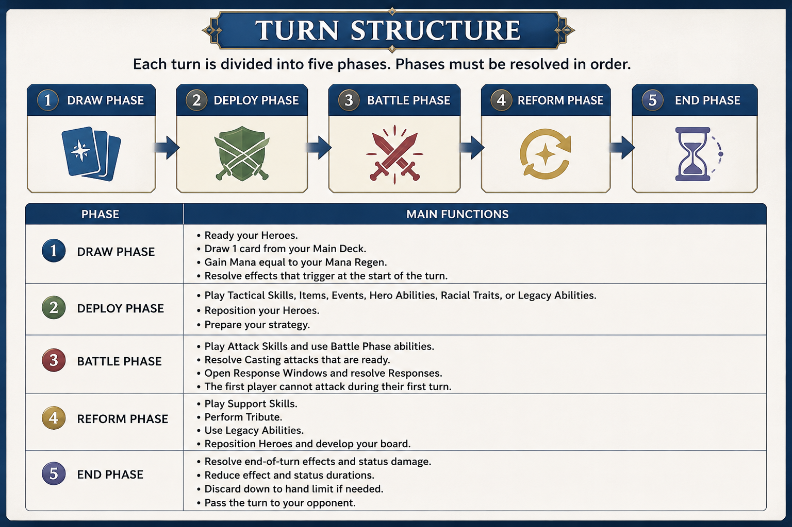
- Draw: Ready Hero, draw wajib 1 kartu, lalu dapatkan Mana.
- Deploy: Tactical, Item, Event, Ability, Racial Trait, Legacy Ability, Reposition.
- Battle: Attack, Response, dan Casting yang sudah siap.
- Reform: Support, Tribute, Legacy Ability, Reposition.
- End: Status dan efek akhir turn, kurangi Hand sampai 8, lalu ganti pemain.
Mana
Mana Shard membayar kartu dan kemampuan. Mana tersedia disimpan di Mana Pool. Mana Pool maksimum 12. Mana Cost adalah jumlah Mana yang dibayar. Mana Regen adalah Mana yang didapat saat Draw Phase dan dapat meningkat sampai 6.
3. Hero dan Dasar Pertarungan
Formasi dan Area of Attack
| Posisi penyerang | Target normal |
|---|---|
| Left | Left atau Center |
| Center | Left, Center, atau Right |
| Right | Center atau Right |
Range Attack
Serangan yang tidak dibatasi oleh Area of Attack normal berdasarkan posisi Hero.
Area Attack
Tidak memilih target satu per satu. Attack mengenai semua Hero lawan di dalam Area of Attack Hero pengguna.
Cara menggunakan Attack Skill
- Pilih Attack Skill dari Hand.
- Pilih Hero yang memenuhi Class, Rank, dan syarat kartu.
- Pilih target yang legal bila diperlukan.
- Konfirmasi, bayar Mana, dan Exhaust Hero bila diperlukan.
- Lawan mendapat kesempatan Response.
- Selesaikan damage dan efek kartu.
Reposition
Reposition menukar dua posisi yang bersebelahan. Left bersebelahan dengan Center; Right bersebelahan dengan Center.
| Pertukaran | Hasil |
|---|---|
| Hero ↔ Hero | Keduanya Exhausted. |
| Hero ↔ Legacy | Hanya Hero Exhausted. |
| Legacy ↔ Legacy | Tidak legal. |
HP, EXP, status, Attachment, Casting, dan Exhaust ikut berpindah bersama Hero. Reposition dari efek kartu tidak otomatis Exhaust kecuali tertulis.
- Semua Attack non-Area harus memilih target, kecuali kartu menentukan target sendiri atau menyatakan tidak memakai target.
- Jumlah target mengikuti teks kartu.
- Attack yang memilih beberapa posisi mengikuti pilihan pada kartu; setiap Hero yang terkena mendapat Response sendiri.
- Legacy bukan target Hero, kecuali kartu secara khusus memilih posisi dan mengizinkan Legacy.
4. Positioning System
Hero bertarung sebagai bagian dari formasi battlefield. Posisi menentukan Hero lawan yang dapat diserang.
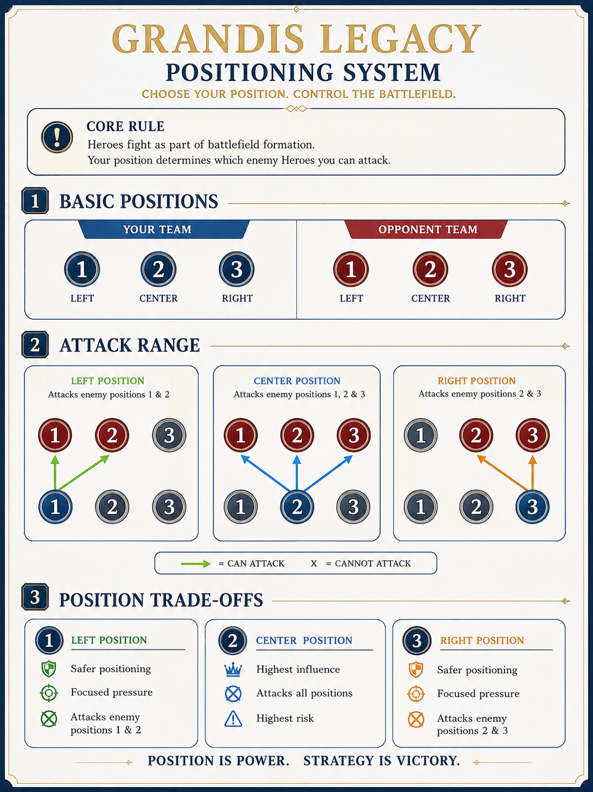
5. Membaca Hero Card dan Exhaust
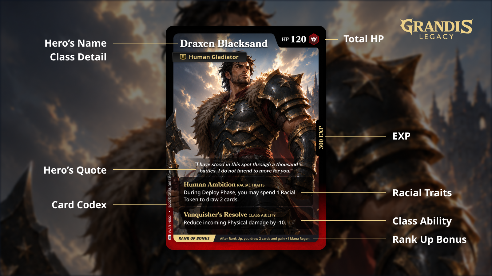
Gunakan Class dan Rank pada Hero untuk menentukan Skill yang dapat dimainkan.
Exhaust dan Racial Token
Ready
Hero dapat menggunakan kartu atau kemampuan yang legal.
Exhausted: Hero tidak dapat menggunakan Skill atau kemampuan aktif normal.
Kembali Ready
Hero biasanya kembali Ready pada Draw Phase miliknya. Hero yang masih Casting tetap Exhausted.
Racial Token: pool maksimum 2. Pemain dapat menggunakan maksimal 1 Racial Token selama satu turn aktif.
6. Tribute dan Rank Up
Tribute
Tribute mengubah 1 Skill Card dari Hand menjadi EXP untuk Hero pilihan.
| Aturan Tribute | Penjelasan |
|---|---|
| Timing | Reform Phase. |
| Batas | Maksimal 1 Tribute normal setiap Reform Phase. |
| Mana | Mana Cost pada Skill tidak dibayar. |
| Nilai EXP | Skill normal bernilai 100 EXP. Ultimate bernilai 200 EXP. |
| Ultimate | Hanya dapat diberikan kepada Hero pemilik yang tertulis pada kartu. |
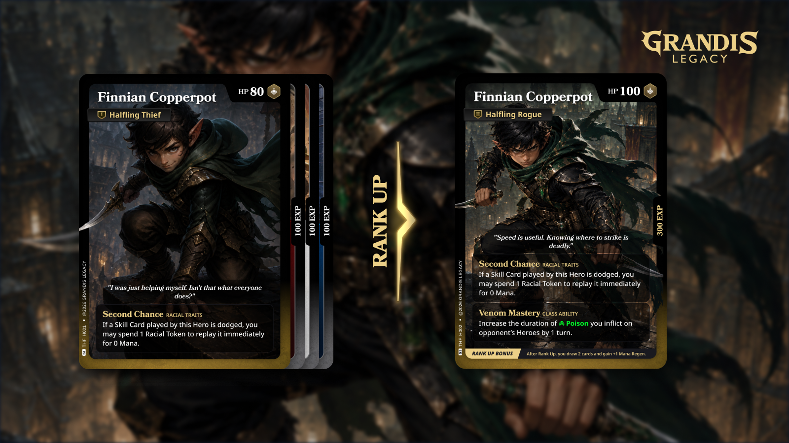
Rank Up
Ketika jumlah EXP Hero mencapai kebutuhan Rank berikutnya, ganti Hero Card dengan kartu Rank yang sesuai.
| EXP | Rank baru | Bonus Rank Up |
|---|---|---|
| 300 | Rank II | Draw 2 kartu dan Mana Regen +1. |
| 700 | Rank III | Draw 3 kartu dan Mana Regen +1. |
Saat Rank Up, semua EXP Card di bawah Hero dipindahkan ke Discard Pile. Damage yang sudah diterima tetap dihitung terhadap Max HP baru. Status, Attachment, Casting, dan Exhaust tetap mengikuti Hero. Mana Pool tidak langsung bertambah.
7. Legacy Card, Defeat, dan Revive
Apa itu Legacy?
Ketika Hero defeated, pilih Legacy Card yang sesuai dan legal untuk menempati posisi Hero tersebut. Legacy bukan Hero. Legacy tidak memiliki HP, Class, Rank, EXP, status, Exhaust, atau Attachment Slot. Legacy tidak dapat ditarget sebagai Hero, tetapi dapat bertukar posisi dengan Hero.
Legacy menjaga Skill Card terkait Hero yang defeated tetap berguna sebagai biaya. Gunakan Skill Card yang diminta sebagai biaya tanpa membayar Mana, lalu jalankan efek Legacy Ability yang tertulis.
Hero Defeated
- Attachment masuk Discard.
- Status dibersihkan.
- EXP Card dipindahkan sesuai aturan defeat.
- Jika ketiga Hero defeated, pemain kalah.
Revive
- Legacy kembali ke Legacy Deck.
- Hero kembali ke posisi tersebut.
- HP, EXP, status, dan Exhaust mengikuti kartu revive.
8. Main Deck dan Membaca Skill Card
Main Deck berisi 60 kartu yang terdiri dari Skill, Item, dan Event Card. Pemain bebas menentukan jumlah tiap jenis. Kartu yang selesai biasanya masuk Discard, kecuali menjadi Attachment atau dipindahkan oleh efek lain.
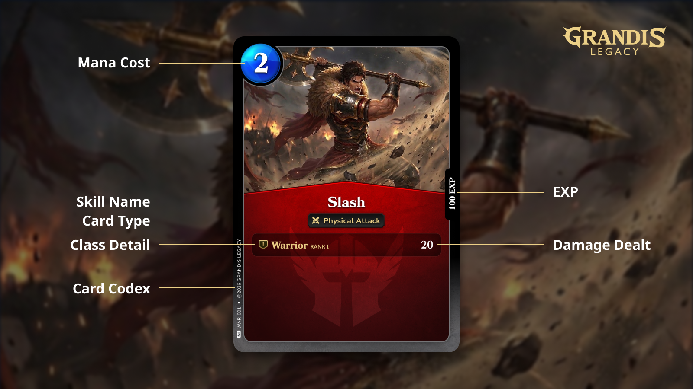
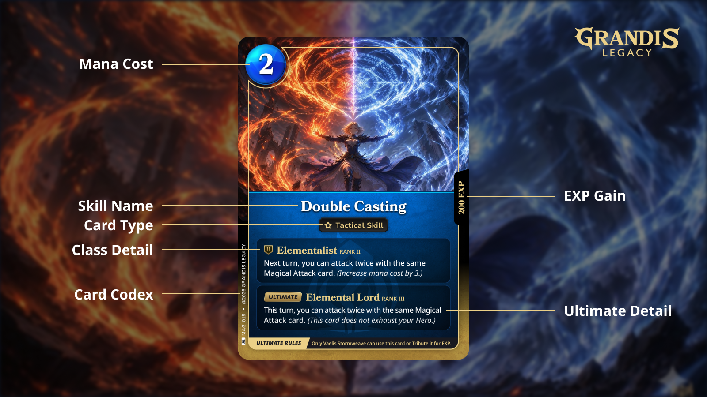
Lineage dan Fallback Efek
Lineage adalah jalur perkembangan Class Hero dari Rank I ke Rank II dan Rank III. Hero dapat menggunakan Skill dari Class sebelumnya dalam Lineage yang sama.
Gunakan baris efek yang sesuai dengan Class dan Rank Hero. Jika tidak ada baris yang tepat, gunakan baris efek tertinggi sebelumnya pada Lineage tersebut.
Sebelum memainkan Skill, periksa Mana Cost, jenis Skill, timing, Class, Rank, Lineage, target, dan teks efek.
9. Simbol Skill, Jenis Skill, Item, dan Event
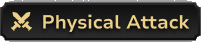
Harus memilih target di dalam Area of Attack dan memberikan Physical damage.
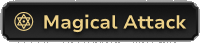
Harus memilih target di dalam Area of Attack dan memberikan Magical damage.
Mengenai semua Hero lawan di dalam Area of Attack tanpa memilih target satu per satu.
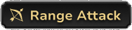
Harus memilih target, tetapi tidak dibatasi Area of Attack normal berdasarkan posisi Hero.
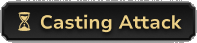
Pilih posisi target saat dimainkan. Posisi tetap terkunci sampai Casting diselesaikan pada Battle Phase.
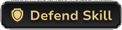
Digunakan saat Response untuk Block, Dodge, Negate, redirect, atau perlindungan lain.
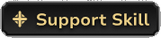
Healing, recovery, atau bantuan lain untuk Hero. Timing mengikuti kartu.
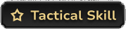
Persiapan, Reposition, buff, draw, atau mengganggu lawan. Timing mengikuti kartu.
Timing Umum Skill
| Jenis | Timing umum | Fungsi |
|---|---|---|
| Attack | Battle Phase | Menyerang Hero lawan. |
| Defense | Saat Response | Melindungi Hero atau menghentikan Attack. |
| Tactical | Deploy Phase atau sesuai kartu | Menyiapkan strategi dan mengubah keadaan permainan. |
| Support | Deploy atau Reform sesuai kartu | Healing, recovery, atau bantuan lain. |
Item Card
Memberikan healing, buff, modifier, atau fungsi khusus. Dapat langsung selesai atau menjadi Attachment bila efeknya tetap aktif.
Event Card
Mewakili kejadian yang memengaruhi permainan. Tidak selalu membutuhkan Hero sebagai pengguna.
10. Response, Attachment, dan Casting
Response
Setelah aksi dimainkan dan biaya dibayar, lawan mendapat kesempatan Response. Jika Response dibalas lagi, efek diselesaikan dari kartu yang paling terakhir dimainkan sampai kembali ke aksi awal.
| Hasil pertahanan | Arti |
|---|---|
| Block | Mengurangi damage, termasuk sampai 0. |
| Dodge | Hero menghindari Attack. |
| Redirect | Mengalihkan target Attack sesuai teks kartu. |
| Negate / Cancel | Menghentikan kartu atau efek sesuai teks kartu. |
Attachment
- Setiap Hero memiliki 2 Attachment Slot.
- Kartu menjadi Attachment jika efeknya masih aktif setelah kartu dimainkan dan perlu dipertahankan untuk timing berikutnya.
- Efek yang langsung selesai tidak ditempatkan di Attachment Slot.
- Slot harus tersedia sebelum kartu yang memerlukan Attachment dimainkan.
- Attachment mengikuti Hero saat Reposition.
- Gunakan counter yang sama untuk menandai sisa turn atau jumlah penggunaan.
- Saat efek berakhir, digunakan, atau Hero defeated, kartu masuk Discard.
Casting
- Jika posisi target berisi Legacy Card saat Casting dilepaskan, Attack selesai tanpa memberikan damage.
- Semua Casting hanya dilepaskan dan diselesaikan pada Battle Phase.
- Casting menggunakan Attachment Slot dan membuat Hero pengguna Exhausted.
- Jika Hero pengguna berpindah posisi atau terkena Stun sebelum Casting dilepaskan, Casting dibatalkan.
- Casting normal mengurangi counter pada awal Battle Phase berikutnya.
- Saat counter mencapai 0 pada Battle Phase, Attack dilepaskan dan lawan mendapat Response.
- Setelah Casting selesai, Hero pengguna tetap Exhausted sampai Draw Phase berikutnya.
11. Status dan Healing
Status melekat pada Hero dan ikut berpindah saat Reposition. Legacy tidak dapat menerima status Hero.
| Status | Efek |
|---|---|
| Bleed | Hero tidak dapat menerima healing selama Bleed masih aktif. Bleed tidak memberikan damage tambahan. |
| Burn | Jika Hero dengan Burn menerima damage dari Attack, Attack tersebut memberikan 10 damage tambahan. |
| Freeze | Hero tidak dapat berpindah posisi, baik melalui Reposition normal maupun efek Skill, dan tidak dapat menggunakan Dodge. |
| Poison | Memberikan 10 damage pada End Phase pemilik Hero untuk setiap turn durasinya. |
| Stun | Hero tidak dapat dipilih sebagai pengguna atau sumber untuk Skill, Item, Event, Ability, atau efek aktif selama Stun masih aktif. |
Healing
- Healing tidak dapat melebihi Max HP.
- Single-target healing membutuhkan Hero yang terluka dan tidak memiliki Bleed.
- Pada healing beberapa target, Hero yang full HP, defeated, atau memiliki Bleed dilewati.
- Modifier Healing Done dan Healing Received diterapkan bila ada.
12. Ringkasan Cepat
| Topik | Aturan singkat |
|---|---|
| Menang | Defeat 3 Hero lawan. |
| Deck-out | Kalah hanya ketika draw wajib pada Draw Phase gagal. |
| Turn | Draw → Deploy → Battle → Reform → End. |
| Area of Attack | Left: Left/Center; Center: semua; Right: Center/Right. |
| Range | Harus memilih target tanpa dibatasi Area of Attack normal. |
| Posisi | Membatasi target Attack pada Battle Phase; kartu di luar Battle Phase tidak dibatasi posisi kecuali tertulis. |
| Reposition | Hero berpindah bersama HP, EXP, status, Attachment, Casting, dan Exhaust. |
| Tribute | 1 Skill menjadi EXP pada Reform Phase. |
| Rank Up | 300 EXP ke Rank II; 700 EXP ke Rank III; semua EXP Card masuk Discard saat Rank Up. |
| Attachment | 2 slot per Hero; digunakan bila efek tetap aktif setelah kartu dimainkan. |
| Legacy | Menggunakan Skill tertentu sebagai biaya untuk menjalankan Legacy Ability pada Deploy atau Reform. |
| Racial Token | Maksimum 2; gunakan maksimal 1 selama satu turn aktif. |
Tiga Alur Utama
Hand dan Search
- Hand bersifat privat.
- Setelah mencari atau melihat Main Deck, kocok kecuali kartu menyatakan berbeda.
- Effect draw mengambil kartu sebanyak yang tersedia, termasuk 0, tanpa langsung kalah.